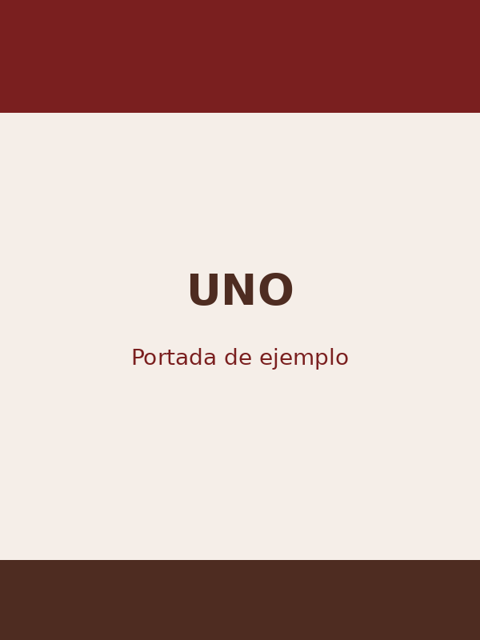

UNO
UNO es un juego de cartas rápido y sencillo en el que los jugadores deben deshacerse de todas sus cartas.
Las cartas especiales permiten cambiar el sentido del juego, saltear jugadores o hacer que un rival robe nuevas cartas.
Ver reglamento